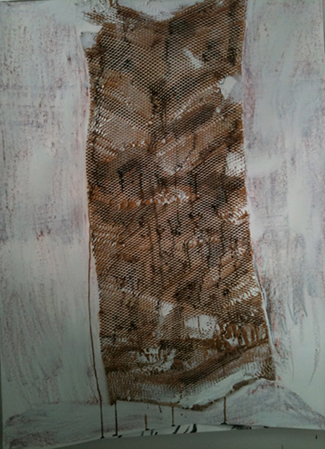
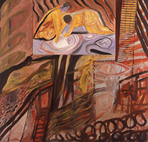
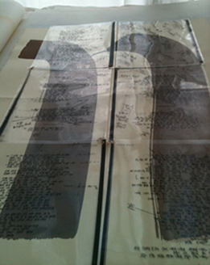
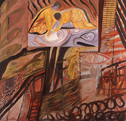
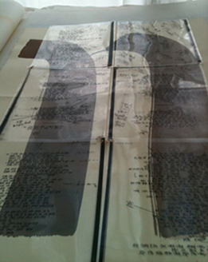
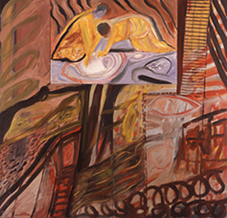
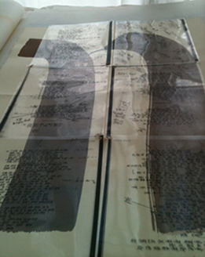

 






artist | sculptor
Found assembled objects on wood supports | interior exterior shaped boxes | refer to archeology | ceramic shards | persian miniatures | game pieces | bamayan buddhist caves coptic eyes | myself in relation to past | mother's quilt | juxtaposing elements with each other | myself in relation to the past | myself in relationship to nature |